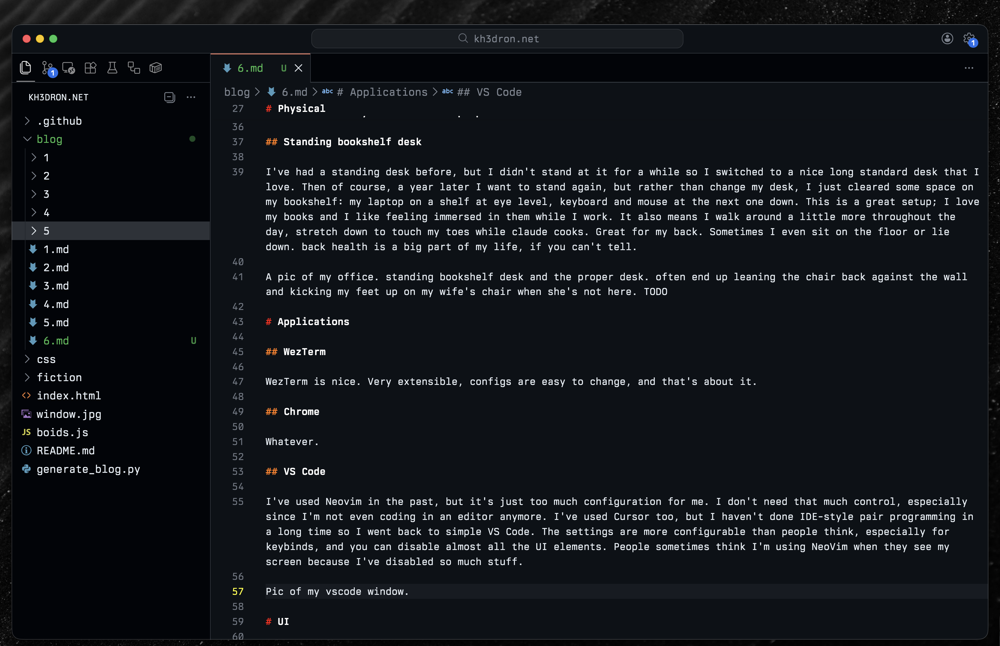
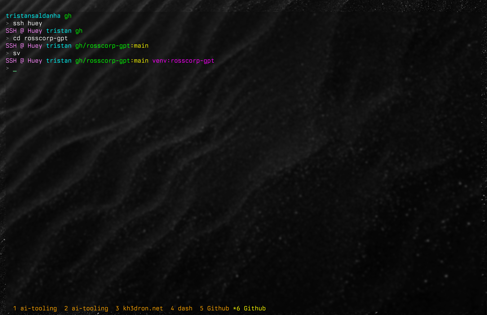
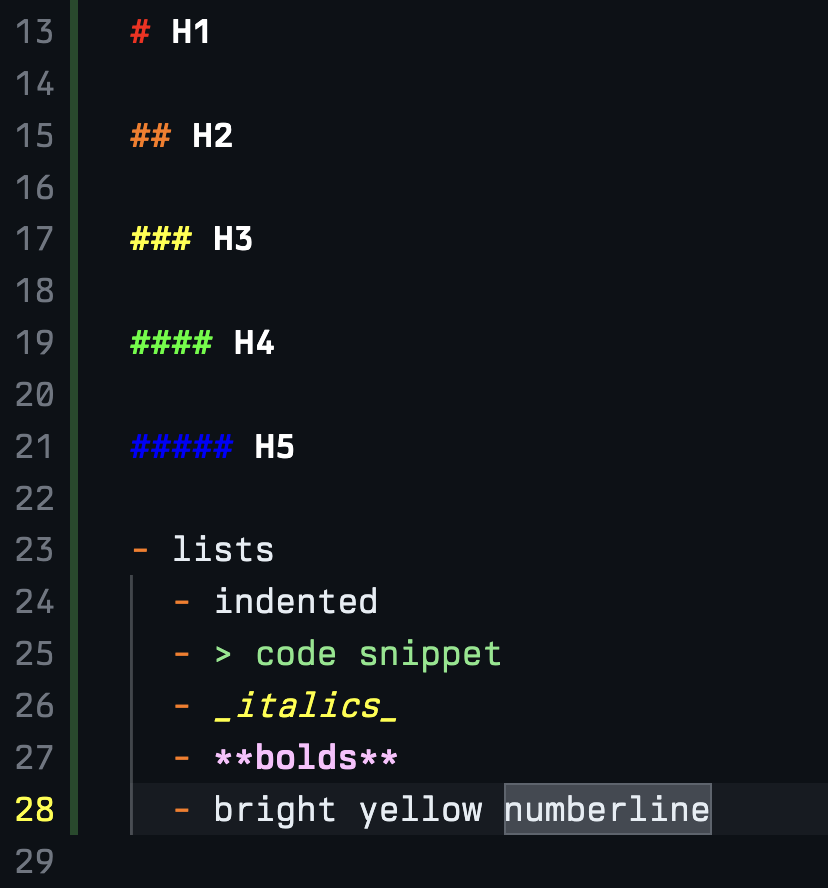

I work a lot on dev experience and configs at work. I've iterated a lot on my own flow, especialy as coding has changed in the last year or two. Here's a snapshot of what I'm doing now, just as a time capsule of my personal meta in March 2026.
Contents:
Principles
Laziness
I'm not interested in trying a million new tools. I've found that the stuff I like the most has almost no learning curve; I can set it up and be fluent by end of day. If I find myself thinking "I just need to push through a few more days and then I'll be good with it," I tend to just give up.
Cleanliness
I like things simple. As few things as possible should be on the screen at once. To adopt a phrase: if you're not occasionally re-surfacing things that you previously hid, you're not hiding enough.
Physical
Laptop only, no monitors
Primarily because of Aerospace, I don't need to use an external monitor. I've gone through lots of setups in the past: 2x1080p, then 2x4k, ultrawide, then 1x 4k, now back to just the laptop. I only ever have window open on the screen at a time, no split screens, no split terminals or editors. A 15-inch laptop is plenty. this gives me great mobility; I can lounge around and be 100% comfortable on a couch, in a hotel room, or moving between conference rooms.
My desk at home faces a window, and there's some birdfeeders right outside. I like watching birds come and go throughout the day, though I probably see more suquirrels.

Mechanical keyboard on the laptop
I use a 75% keyboard, a Keychron K3. It's either on top of my MacBook Pro keyboard or on my bookshelf desk. It's a little silly to carry around and set up on top of my laptop, and I've tried not doing this, but it just feels much nicer to use. I like the K2 because it's simple, low profile, and has no bezel. I had a wacky Voyager split keyboard for a while, I used it for about three months, but I was just so annoyed at having to learn how to type again that I gave up. My typing speed is about 130 WPM on a normal keyboard, and I peaked at ~100 after 3 months on the voyager.
Standing bookshelf desk
I've had a standing desk before, but I didn't stand at it for a while so I switched to a nice long standard desk that I love. Then of course, a year later I want to stand again, but rather than change my desk, I just cleared some space on my bookshelf: my laptop on a shelf at eye level, keyboard and mouse at the next one down. This is a great setup; I love my books and I like feeling immersed in them while I work. It also means I walk around a little more throughout the day, stretch down to touch my toes while claude cooks. Great for my back. Sometimes I even sit on the floor or lie down. back health is a big part of my life, if you can't tell.
A pic of my office. standing bookshelf desk and the proper desk. I often end up leaning back in the chair against the wall and kicking my feet up on my wife's chair when she's not here.

Applications
WezTerm
WezTerm is nice. Very extensible, configs are easy to change, and that's about it. I keep the terminal background mostly transparent, which makes the colors pop. I like wallpapers that are typically dark and mostly monochrome. I've got about 300 in a folder and change them one every couple weeks to shake things up.
Chrome
Whatever. See Laziness.
VS Code
I've used Neovim in the past, but it's just too much configuration for me. I don't need that much control, especially since I'm not even coding in an editor much anymore. I've used Cursor too, but I haven't done IDE-style pair programming in a long time so I went back to simple VS Code. The settings are more configurable than people think, especially for keybinds, and you can disable almost all the UI elements. People sometimes think I'm using Neovim when they see my screen because I've disabled so much stuff.

UI
Bright colors
I like ANSI colors, extremely high contrast. I even try to use only 0s, 7s, and Fs when writing color hex codes. Markdown files are what I work in most, so I've set a couple custom coloring rules for them in VS Code: making the colors brighter, more differentiable, and more readable. I use OhMyPosh for a custom header in my terminal. Again, just colored text; I don't have any emojis or icons or anything. I've also got this set on my couple hosts that I SSH into so I can always tell where I am really quickly. Speaking of, I have a dotfiles repo which I pair with GNU Stow and Ansible to make sure that it's always up to date on everything I use.


Font
I paid for a font, which felt silly at the time, but I love it: Berkeley Mono by US GRAPHICS COMPANY. It feels like a favorite font should be niche, but these days most of the screenshots I see on Twitter use the same one. I have it set in WezTerm and VS Code via an extension that lets me change the fonts for not only the editor, but also all other UI text. I've tried it in Slack and Chrome too, but it's a bit overkill there. For code, though, it's perfect.
Macros
Universal tab and window shifting
I've mapped the same core keybinds across WezTerm, VS Code, and Chrome. Option+J and Option+K shift tabs left and right. Command+n jumps directly to tab n. And again, I never split windows; one pane at a time, I just switch tabs quickly. I've got a nice tab bar theme in WezTerm that gives me sort of Tmux-style tabs at the bottom. The tab titles show what repo I'm working in, which makes jumping between projects fast.
AeroSpace
AeroSpace is incredible, definitely the most important piece of software I use for quality of life. I have a lot of workspaces mapped:
- 1: terminal
- 2-5: VS Codes for things in progress
- tab: notes
- ~: dotfiles
- s: slack
- c: chrome (personal)
- a: chrome (work)
- m: music
- z: zoom
- b: messages
- 9: spare terminal (personal ssh)
- 8-6: other VS Codes
This sounds like a lot but I don't change them, and I'm just fluent with these at this point. I can instantly switch between any of these and combine it with my universal tab keybinds. I feel extremely close to everything at once. This is also what let me leave monitors behind and work full time on the laptop.
Workflow
Claude Code for as much as possible
Nothing here that isn't written a thousand times already on the web, but I basically just use Claude Code for programming. Occasionally Codex and other agents or fully headless workers, but I don't do any pair programming or tab complete. VS Code is really just a file tree viewer and a diff viewer for me.
Wispr Flow
I hold down Option+P and speak. I use this a lot with Claude Code. I don't use it much for emails or messages, because the polishing of the spoken words is usually not that much faster than just typing to begin with. There are lots of other options for voice-to-text but I haven't cared to look into them. Work pays for this one. shrug
Writing Agents
Getting a little outside the scope of this post, but for any workflow or project I work on long enough, I eventually move into writing skills and agents in my dotfiles repo. That way I can invoke Claude Code more efficiently elsewhere rather than dealing in raw prompts for repetitive tasks.
EOF